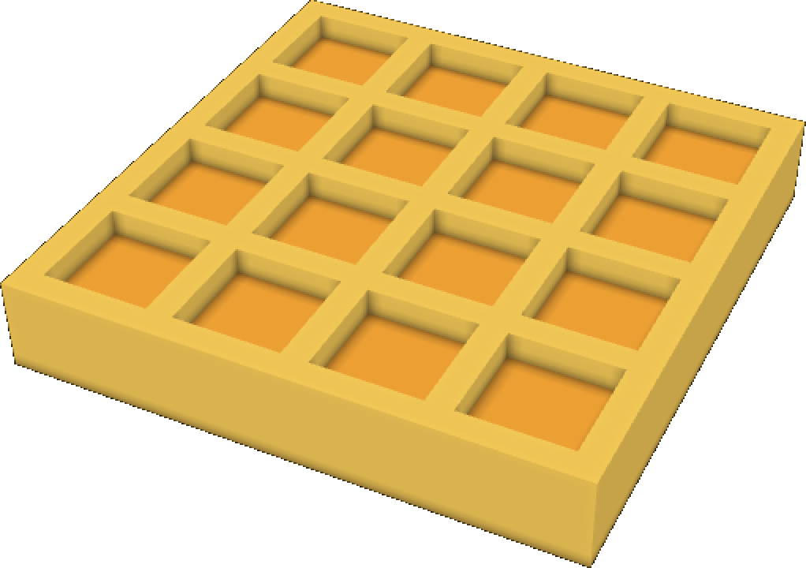

PRESSKIT
Game Name: Candy Road
Developer: Lina Lu
Company: Roadkill
Release Date: April 30, 2017
Platforms: iOS (iPhone® & iPad®) and Android
Website: http://candyroad.co
Languages: English, Français, Deutsch, Italiano, Español, Português, русский язык, 正体字, 正體字, 日本語, 한국어, العربية

Tell us about Roadkill!
Lina: Roadkill was named after all the characters in the Candy Road game, because they all become roadkill at some point!
What makes people download Candy Road?
Lina: I loved playing computer games growing up, so I prototyped a flying goose crossing the road for fun and found myself pretty addicted to it. From there I decided to make it into a full game. I get pretty obssessed with something once I start working on it so I added localization for non-English speaking players to enjoy the game, lots of characters, different exotic terrains, a claw machine, a gift volcano, hidden characters to unlock, and there will be plenty more to come! All of the game features can be enjoyed completely free of charge, so that everyone can play it whether they are waiting in line or on a long roadtrip.
Was it challenging to do the coding, art and sound yourself?
Lina: This was my first game so everything was a first for me and I go into something with the belief that there is nothing you can't learn. Having never done something before means that you may not get them perfect on the first go so there was a fair bit of experimentation, learning and iteration that went into the Candy Road you play today on your phone!
What did you enjoy most about making Candy Road?
Lina:
I spent a lot of time thinking about how to make the characters look interesting and fun to play. The brainstorming characters part was really fun! I literally sat down at a cafe and came up with about 50 characters, then went home to put them into voxel art and then animated them to put in the game. The most rewarding part was seeing something go from a sketch in a notebook to a live character being squashed in the game!
Credits
Game, Sound & Art: Lina
Contact
Inquiries: support@candyroad.co
Twitter: Candy Road @candyroadgame
Instagram: Candy Road @candyroadgame
Play on iPhone, iPad & Android!
Why do pigs fly?
Why do pigs fly across the road?
Why do pigs fly across the road AND eat candy?